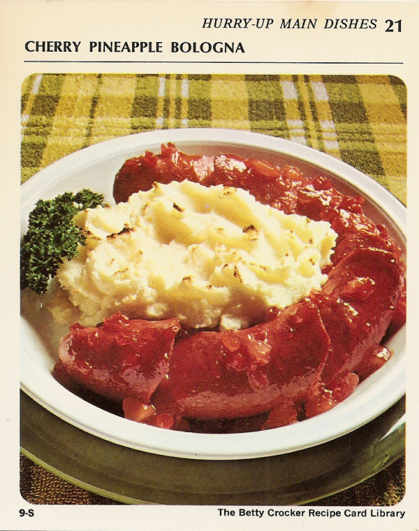

Cherry Pineapple Bologna

Ingredients
- 1 pound ring bologna
- Potato Buds instant puffs (enough for 4 servings)
- 1/2 cup crushed pineapple
- 1/4 cup coarsely chopped maraschino cherries
- 1/4 cup light corn syrup
- 2 tabelspoons white vinegar
- 1/4 teaspoon cloves
- 2 drops red food color
- 11/2 teaspoons water
- 11/2 teaspoons cornstarch
Preparation
- If necessary remove casing from bologna; arrange bologna in ungreased 9-inch pie pan.
- Cut ring diagonally at 2-inch intervals, being careful not to cut completely through.
- Separate cuts and spoon in part of glaze. Spread remaining glaze on top. Heat oven to 400°.
- Mound potatoes in center of ring. Bake 20 minutes or until potatoes are light brown.
Cherry Pineapple Glaze
- Heat pineapple, cherries, corn syrup, vinegar, cloves and food color to boiling, stirring occasionally.
- Reduce heat; simmer 15 minutes. Blend water and cornstarch; stir into fruit.
- Cook, stirring constantly, until mixture thickens and boils. Boil and stir 1 minute.